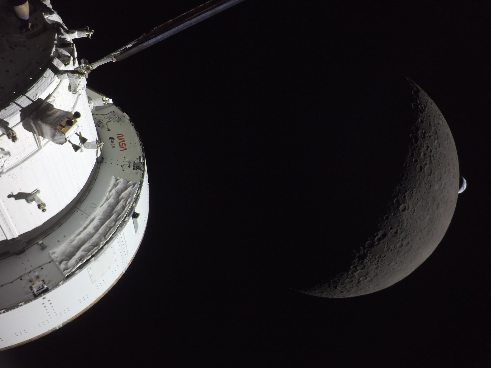
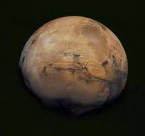
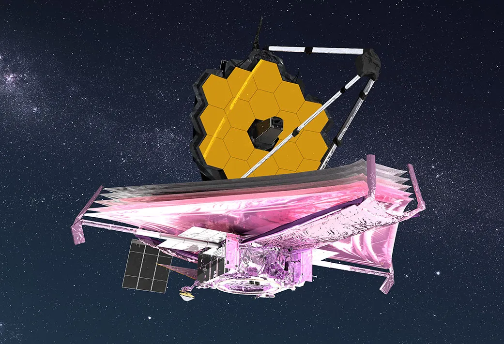
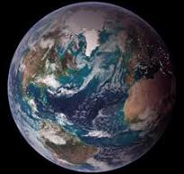
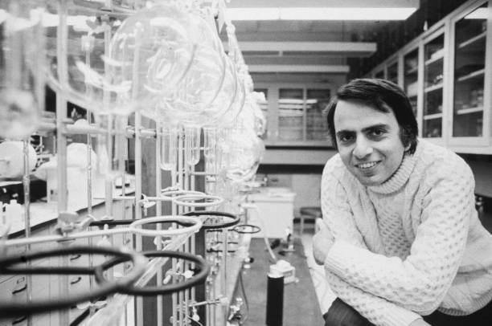

Explore Beyond the Horizon
Discover the missions, worlds, and technologies helping humanity understand the universe beyond Earth.

Journey through space





“There is a wide, yawning black infinity. In every direction, the extension is endless; the sensation of depth is overwhelming. And the darkness is immortal. Where light exists, it is pure, blazing, fierce; but light exists almost nowhere, and the blackness itself is also pure and blazing and fierce.”- Carl Sagan
Ready to Explore ?
Take the first step into the universe. Discover missions, worlds, and discoveries beyond our planet.